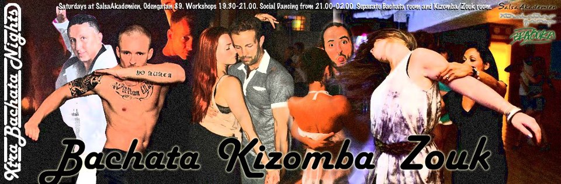
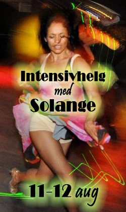
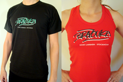

Fest varje lördag!
Brazouka inleder ett samarbete med klubben X-TRA BACHATA NIGHTS
där det bjuds på dansgolv i zouk lambada, kizomba och bachata natten lång.
Varannan lördag ger Brazouka en dropinlektion i zouk lambada, med start 22 september.
Övriga lördagar bjuds det på workshops i kizomba och bachata.
EXTRA EXTRA - DENNA VECKA!
Nu på lördag 16/9 skuttar Xtra Bachata Nights in i Kägelbanan,
med större dansgolv och lite extra latino-vibe, i en maxad fest
med zouk, kizomba, bachata, salsa, cubaton, mm.
Två dansgolv - där Brazouka kommer dansa loss i zouk/kizomba/bachata-rummet.
Plats: Kägelbanan, Mosebacke Torg 1-3
(snedda Mosebacketerrassen och ta trappan ner till Kägelbanan)
Tid: 19.00-01.00
Workshops i kizomba, salsa och bachata: 19.15-20.15
Pris: 150 kr
FRÅN OCH MED 22/9:
ADRESS: Odengatan 89, t-bana Odenplan, Salsaakademien
19.30-21.00 Workshops i zouk lambada varannan vecka - start 22/9
21.00-02.00 DJ SWEET LIPS DEB plays the hottest & most sensual Kizomba & Zouk
21.00-02.00 DJ Oso Sabroso plays the latest and best Bachata
Efter kl 21.00-22.00: 70 kr (endast inträde)
Vi ses på dansgolvet!

THANK YOU
♫♪ ― SOLANGE DIAS ― ♫♪
For an unforgettable weekend in August with inspiring workshops and parties full of true lambada energy!
Thank all of you who came and created the very nice ambience.

Brazoukas klädkollektion 2012

Nu finns det Brazoukatröjor till försäljning,
t-shirts för herrar och linnen för damer.
Killmodellen finns i svart och vitt, storlek M och L.
Damlinnet är one size i stretchigt tyg och finns i rött, svart och vitt.
Bilder på samtliga modeller finner ni i vårt
Facebookalbum (inloggning på Facebook krävs).
Begränsad upplaga – slå till medan du kan!
Pris: 150 kr
Beställning görs via mail till info@brazouka.com.